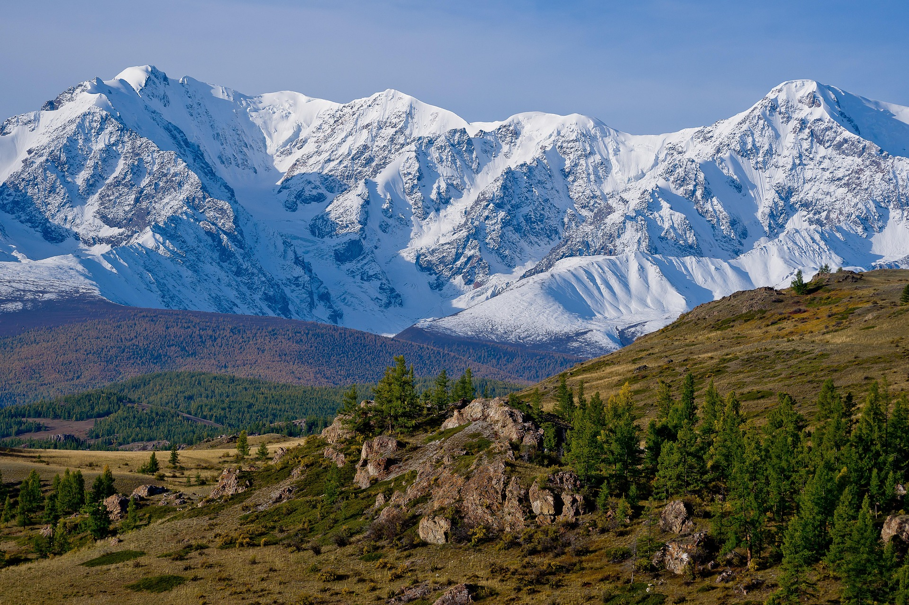
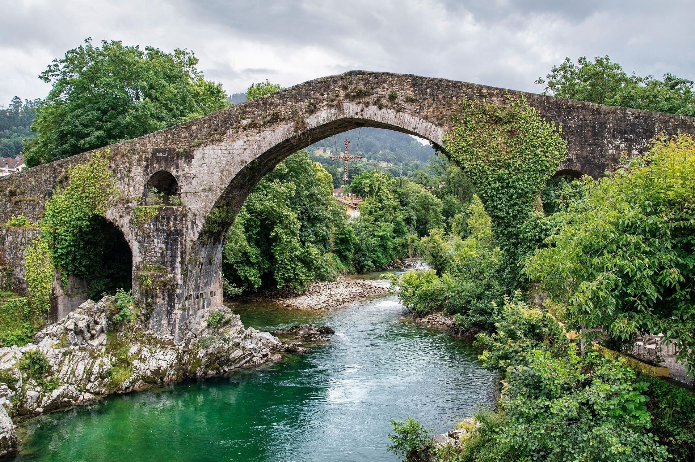
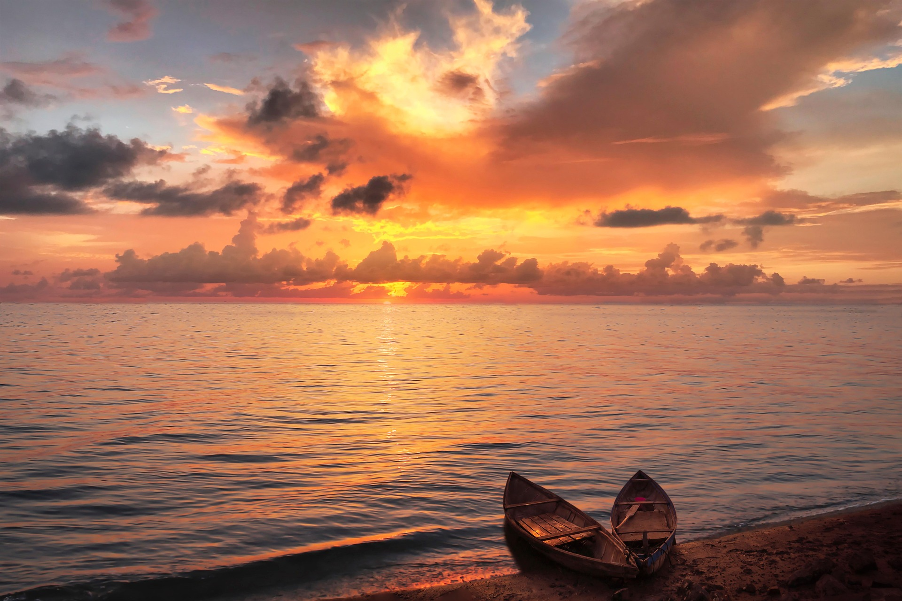
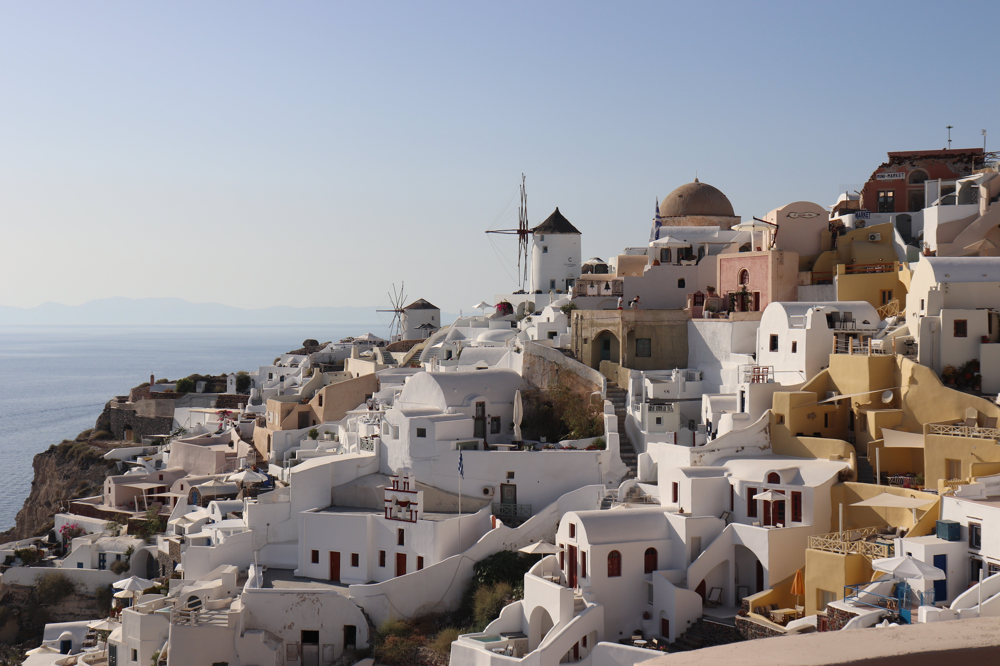

Join us on our adventure across the globe!
This website is a live blog of our travels discovering and exploring several places around the world. Our goal is to reinvigorate the wonder and excitement of exploring the world and finding new locations!



